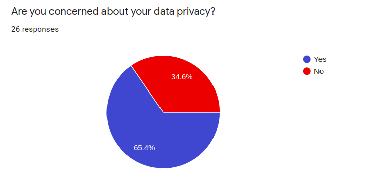
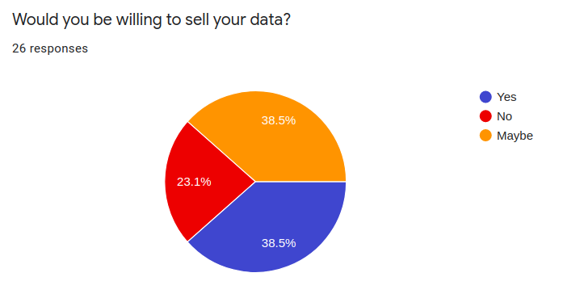
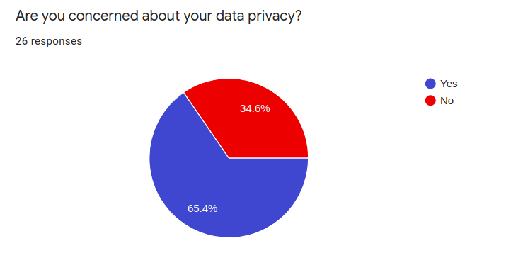
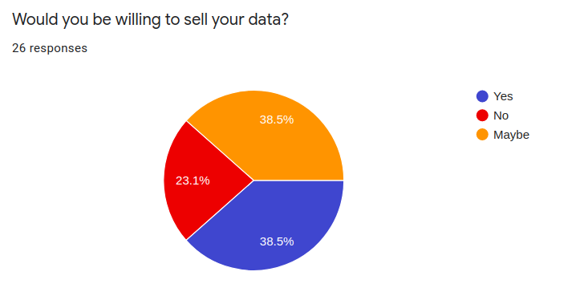

There are 2.5 quintillion bytes of data created daily, and this number will only grow with the expansion of the internet of things, cloud storage and social media. Those bytes of data can come from smart devices (speakers, phones, watches, etc.), the internet, social media, communication, photos, services, and more. Data is everywhere, and companies around the globe pay big bucks to acquire it. They’re willing to go far for people’s personal data to be able to target the right markets and enhance their revenue, for example by the means of targeted ads. Companies that sell people’s personal information can retrieve that data by listening to people’s conversations, tracking their search histories, retrieving data from forms that they have completed, etc. The problem is that the user has consented to their practices when they accept their consent form and download or visit their services. The reality is nobody reads the totality of the consent form or the terms and conditions that determine what companies can do with their data. The result of this is that users discard their data privacy. We believe that everyone should have a say on how their personal data is used, and who can benefit from it. The goal of DataPiggy is to create a personal data marketplace where users can freely sell their data to whoever they want to, for whatever purpose they feel comfortable with, and profit from it.
Eight questionnaires and 25 forms were completed by potential users to help us better understand what people would want from a data marketplace.
The key points retrieved from the online forms were that users generate a lot of data on social media, and are generally concerned about their data privacy. They are most willing to sell social media information and likes, and almost never wanted to sell personal conversations and emails. It was no surprise to find out that they wanted to choose the data they could sell and set a price for it. Some comments received on the form included:
Updates on how my data is used. In which domain my data is used.
We addressed this by showing a history of past transactions, along with
who they sold their data to and for what. We made sure to incorporate
those needed features in our design.
Cost per data depending on type.
We addressed this by showing how
much the data they selected usually sells for. They are still allowed to
set any price they want though.
Possibility to opt-out of any data selling.
In our app, users
will accept offers manually. To avoid selling any data, one must simply
not accept any offers - but they are still shown which companies want to
buy their data, which is still interesting.

 





We also conducted interviews to get a better feeling of our users’ needs. The conclusion we got from the interviews resembled the one from the forms. However, after speaking with our users, it was revealed that there were concerns about security and transparency. Recent fraud events across Quebec have left the people wary, and it’s essential that our users know our platform is secure. The users also wanted information about who was buying their data, and it was important to them that they could set the price themselves.
The sets of interviews can be found here.
Results from interacting with our users suggested that there could be different types of users that could use DataPiggy. Creating personas helped us better understand our users’ needs, experiences, goals, and behaviors. The three personas are two extreme views (sell everything and sell nothing) and one moderate view (sell some data selectively).


Before jumping into designing and creating charts, it was important to see examples of current marketplaces to have a better understanding of what users are used to. Popular marketplace includes, but aren’t limited to, Facebook, Kijiji, Letgo. From a seller perspective, these popular websites have some points in common. The UI/UX is very simple and minimalist. When selling an item, you can choose a category and attached to it a price. It’s key to keep the same approach to create a sentiment of familiarity.
From the examples that were examined, we were able to determine the basic pages needed in a marketplace, such as a page for indicating what to sell, a page where users can see the history of their transactions, etc.
In this user journey, the persona of Emma Bison is going to set up an account for DataPiggy. She is apprehensive at first, and her emotional state is low. As the journey progresses, she becomes more comfortable with the idea of selling her data. Included in this user journey are her thoughts, actions, emotional state, and finally the things to keep in mind for the designers based on all these.

Mapping the basic flow of the app ensured that the team understood every step that the users will take. It helped clarify how the user would do basic functions, and discover ways to make the process smooth and simple. It helped define the customer experience and the user needs.

The initial set of sketches was created in order to gain the ability to see what page controls the user would need. It was initially seeded in our user flow - helping us guarantee that every action that a user would need to take had a corresponding control on our page. In addition, the sketches helped us think further of the usability of the application itself - what notifications would be needed, what data should be displayed. The main advantage of a lo-fi sketch is that it is the most cost-efficient (at least in terms of time) way to express a set of ideas and a flow.
The wireframes originated from the sketches but also from our research about the different marketplaces. We tried to imitate the known format of existing marketplaces in order to make the user more at ease with our It is at this point that we came up with the idea of incorporating explanatory boxes as a first-class citizen of our UI in order to help two criteria that we had identified: people don’t like reading “terms and conditions” and when they do, they rarely understand what is implied or they forget. As a result, we put explanatory boxes next to every important control on the application, and we started working on the language used in these boxes - making the controls clear without using intimidating legalese (legal terms). Also at this point in time, we decided that some of our sketches’ drawings were better served as modal dialogs in order to contextualize them better. We also came up with the concept of “recurring transactions” which would give more insight to the user as to who is buying their data.

Once we de-risked and iterated over most of the controls, and the logo and style guide was ready, we started our work on the mock-ups. Last-minute additions were created in order to enhance the ease-of-use of the application. The first one was revisiting the texts in our user interface in order to make them shorter and clearer. Secondly, we added a hover-over symbol on our dashboard for our Instant Offers, which enable the more experienced users to do a single-click accept.
This storyboard explains the thoughts and feelings of Sandy. She feels watched by her devices and the software she uses, represented by the red eyes watching her. She knows “They” are watching her and collecting her data, but she doesn’t know who “They” are, and what they are doing with it. When she discovers DataPiggy, she feels in control, and informed about what is happening with her data. She even gets paid! In the end, the eyes are still watching, but they are less threatening to her now.

The name DataPiggy came from merging the familiarity of a simple piggy bank and the main theme of data. The team wanted a simple logo that could fit with our style guides. After multiple iterations, a monochrome color was chosen.
For our style guide, the burgundy, sunglow, and my sin colors were chosen. The burgundy color symbolizes ambition, wealth, and power, which mix perfectly with the empowerment that we want to give our users with their data. Sunglow and my sin mix perfectly with the burgundy colour, which creates an efficient palette. For the typography, the team decided to go with Montserrat. Montserrat is a popular and neat font from adobe. We wanted a simple font to go well with DataPiggy. For the icons, FontAwesome icons were chosen by the team. They are free and offer multiple icons on data, banking, technologies, etc., which made the choice simple.

In today's world, animations are key to an application. Users are used to interactive websites, and it adds a lot of fun and life to the websites. DataPiggy will have a custom splash screen while the user information is being fetched.
In conclusion, the problem that exists today is that users feel that companies are taking their data without them knowing, and without them knowing why and for what purpose.
Through online forms and interviews, we discovered what users want and don’t want. Users are mostly willing to sell at least parts of their data. They want to feel in control over what is sold and for how much.
From these questionnaires and interviews, we were able to come up with three personas: the George Markus, who firmly believes that companies will get his data anyways and is willing to sell almost anything. The Earl Kosovich, who is incredibly wary of any companies having his data, and the Emma Bison, who is selective about what she wants to sell.
Examining other marketplaces helped us determine what pages we needed - for example, a screen where users set what they want to sell and a screen to see a history of what they sold.
With a user journey, we were able to visualize the emotional state of the user at every step, and with the user flowchart, we were able to map the user’s path. Finally, a storyboard gave us direction and purpose.
All of these user research tools helped us determine what the sketches, wireframes, and mockups would look like. For DataPiggy, we wanted to keep everything as clear as possible and inform the user of how it works and make them feel in control. We kept the language easy to understand so the user felt safe. The color scheme and logo evolved throughout the project, and finally, an animation splash screen was created to add fun and please the user.